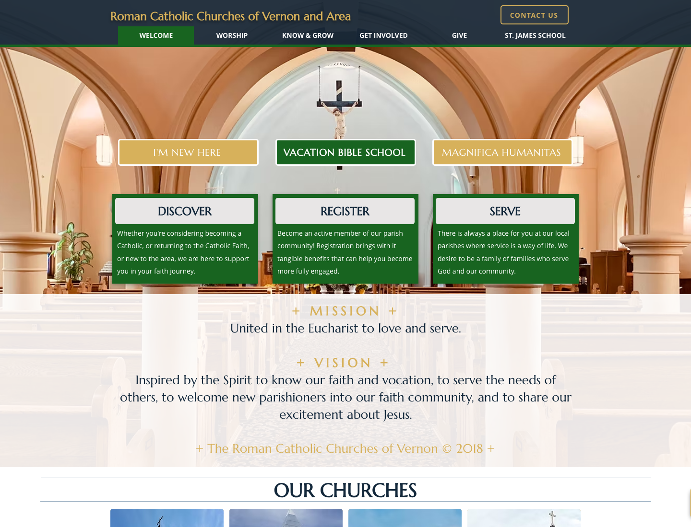
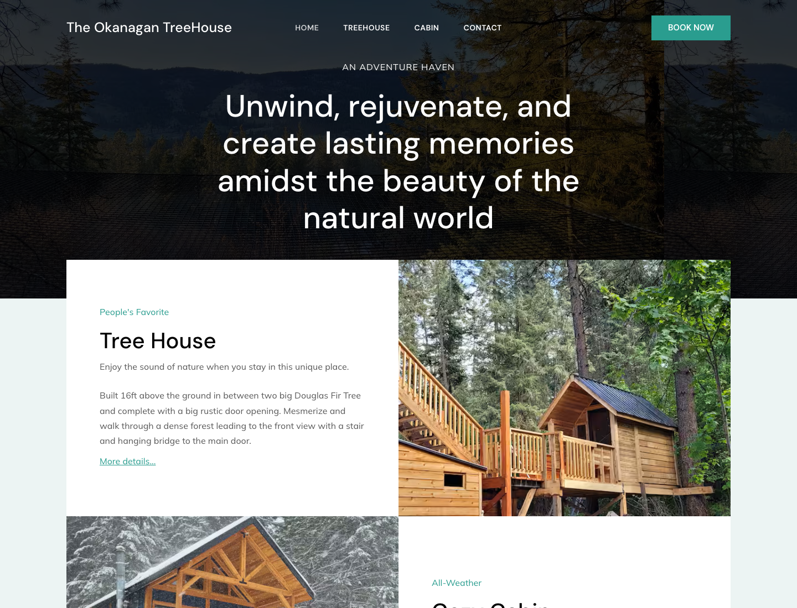

Local landscaping business
Public local-service site tied to search-led page structure and proof snapshots.
How references, image direction, taste review, code, and QA become real sites that can be inspected, edited, and shipped.

The visual reference is not the deliverable. It becomes a source for layout, type, spacing, interaction rules, and QA decisions.

Collect sites, screenshots, brand inputs, project constraints, and the job the page has to do.
Use full-page image prompts to explore layout and atmosphere before committing code.
Translate the chosen frame into typography, spacing, color, components, and responsive rules.
Implement the page, capture desktop and mobile screenshots, fix overflow, copy, assets, and links.
Approved hero, public examples, and project-specific constraints.
Generate and compare full-page visual options before coding.
Capture color, type, spacing, components, and visual rules.
Convert the direction into responsive HTML, CSS, and real assets.
Screenshot desktop and mobile, fix layout drift, and keep the page source-safe.
scroll-states/website_pipeline.png
assets/design-refs/03-how-it-gets-made-workflow.png
DESIGN.md
styles.css
These are the public or portfolio-safe surfaces that benefit from the same reference, build, and verification loop.
Public local-service site tied to search-led page structure and proof snapshots.

Community organization site with visitor paths, forms, bulletins, events, and editorial workflows.

Standalone short-term rental site route with booking-platform links removed from the portfolio context.